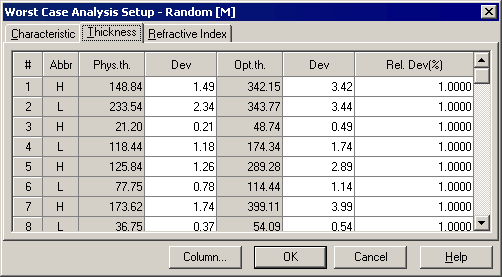

Thickness Error Worst Case Analysis Setup
Thickness Errors Worst Case Analysis Setup
Navigation: OptiLayer Menu Commands > Analysis Menu > Worst Case >
Thickness Errors Worst Case Analysis Setup
` <idh_worstcase_analysis_setup_c.html>`__ ` <idh_menu_analysis.html>`__ ` <idh_worstcase_analysis_setup_r.html>`__
The Thickness page of the Worst-Case Analysis Setup window allows for setting thickness deviations for each layer thickness and starting the Worst Case Analysis.
The maximum allowed thickness deviations can be entered in two interconnected ways: as absolute values (Dev column) and as relative values, i.e., as a percentage of the corresponding layer thicknesses (Rel. Dev (%) column). The default values are 1% relative deviations.

To specify a physical thickness deviation for any layer, select the corresponding cell of the column labeled Dev next to the Phys. th. column. To specify an optical thickness deviation, select the corresponding cell in the Dev column next to the Opt. th. column. To specify a relative error, select the corresponding cell in the column labeled Rel. Dev (%).

Note: The total error for every layer is the sum of absolute and relative errors specified in this dialog.
The Column… button allows easy access to the Column Editor.
The OK button accepts the specified values and starts the Worst-Case Analysis procedure. Its results are displayed in the Worst-Case Analysis window.
See also: